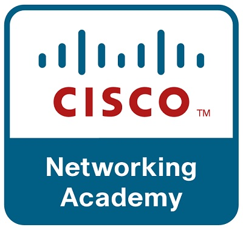

Educación
Primaria: Manuel Gutierrez Najera
Secundaria: Jesus Reyes Heroles. No. 8
Preparatoria: Prepa 2 - UADY

Licenciatura en Ingenieria de Software
La Licenciatura en Ingenieria de Software abarca una gran cantidad de los aspectos del software y de su desarrollo. Desde los lenguajes utilizados comunmente para programacion desde las metodologias utilizadas en el desarrollo software. Tambien se estudian sus diferentes etapas en el desarrollo, desde la fase de requisitos y requerimientos, pasando por le diseño, codificación, pruebas despliegue, mantenimiento, etc. Cada parte del proceso visto en su asignatura corresponidente y en la parte final de la carrera Se hace un repaso de todos estos procesos en la ultima asignatura del tipo obligatoria donde se llevan a cabo todos estos procesos vistos a lo largo de las asignaturas anteriores dedicadas al software.
Curso relevante
Los varios cursos de Cisco consistian en los conocimientos basicos de las redes, posteriormente llevé el curso de ciberseguridad que igualmente era proveniente de Cisco donde se enseñó sobre los fundamentos y conocimentos basicos de la ciberseguridad asi como el manejo de maquinas virtuales que incluyen una amplia gama de herramientas utilizadas para las pruebas de seguridad. Despues, llevé la asignatura de fundamentos de switches y enrutadores que más que nada ampliaba los temas de redes y veia más a profundidas lo que se ve en la asignatura de Redes en unos semestres anteriores. Por ultimo llevé la asignatura de Redes Empresariales y Seguridad Automatizada donde fue una clase muy dinamica por parte del maestro donde se hacian varias practicas con switches, firewalls, VPNs etc
